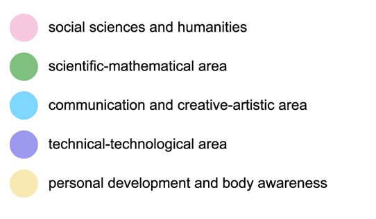

Year
Subject
Sort by
How to read the visualization
The view shows the number of warnings, references, notes and images per entry.
For each subject, entries with more than 350 daily visits are shown.
The red rectangle represents notices, the blue rectangle represents bibliographical references, the green rectangle represents notes and the pink rectangle represents images. The dotted line represents the number of alerts and the total number of references, notes and images in the previous year.
Choose a subject and display order from the menu above to get more information.
